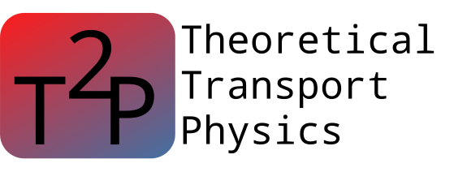
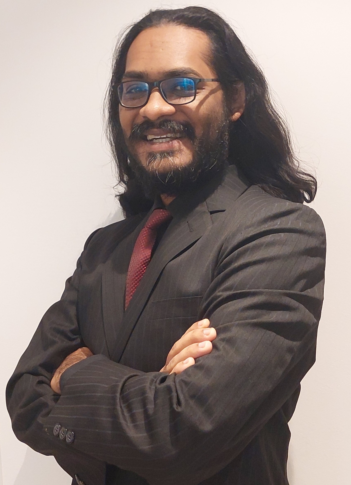
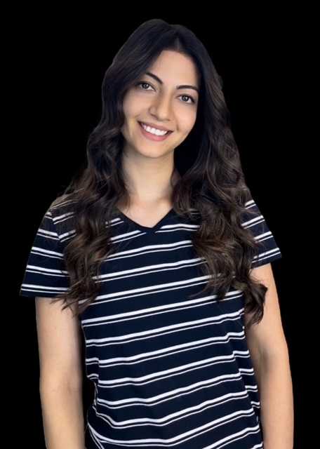
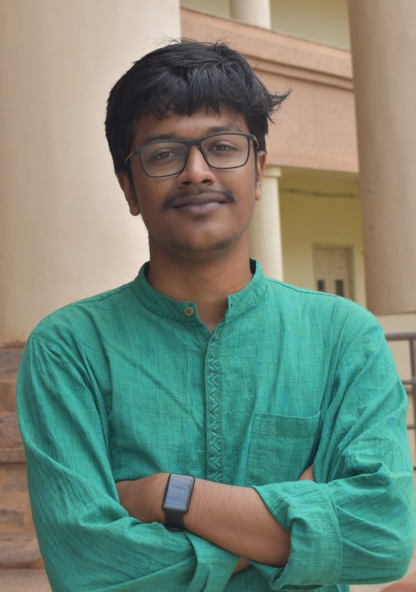
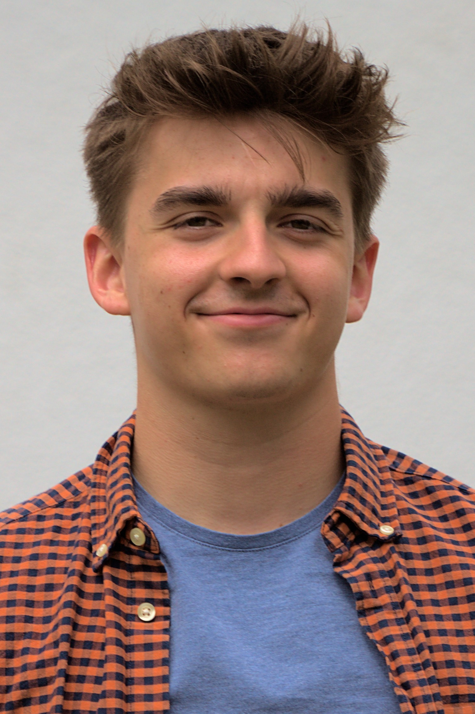
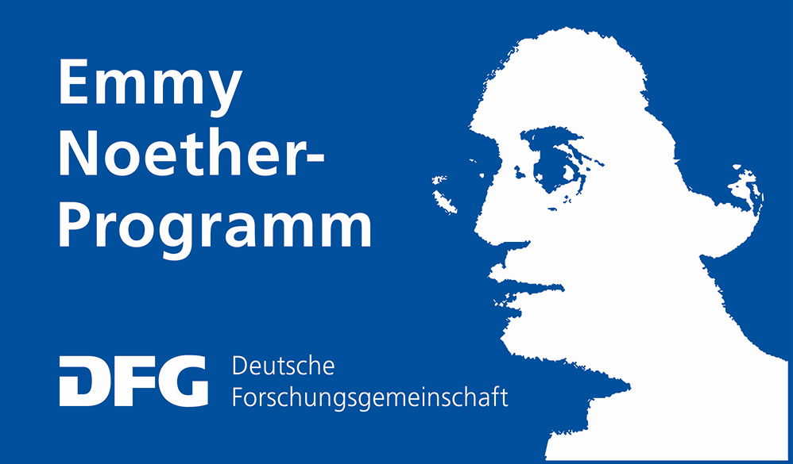

About us
We are an Emmy Noether research group based in the Department of Physics of Humboldt-Universität zu Berlin. We carry out theoretical+computational research to understand the thermal and charge transport properties of materials. Our primary focus is on the self-consistent transport of phonons and electrons – the so-called drag phenomenon.
People
Principal Investigator
Dr. Nakib H. Protik

Nakib obtained his PhD in Physics from Boston College (USA) in 2019. Since then he has been a Postdoctoral Fellow at Harvard University (USA), Postdoctoral Researcher at ICN2 (Spain), and an Alexander von Humboldt Postdoctoral Research Fellow at Humboldt-Universität (Germany) before establishing this group in 2024. His primary focus is on the physics of the interactions and transport phenomena in condensed matter, which he studies using ab initio methods. CV.
Postdoctoral Researcher
Dr. Sally Issa

Sally obtained her Master's in Material Science and Nano-Object (SMNO) from Sorbonne University, France. She then completed a PhD in Condensed Matter and Nanoscience from Aix-Marseille University, France, focusing on point defects in high entropy alloys using ab initio atomistic simulations. She then pursued a Postdoctoral position at Freie Universität Berlin. Her research expertise spans material science and computational physics.
PhD students
Dwaipayan Paul

Dwaipayan completed his Integrated Master's in Physics from the National Institute of Science Education and Research (NISER), India. His research interests include development and application of molecular modeling techniques, with a goal of designing sustainable next-generation devices. In the past, he carried out transport physics research in carbon nanotube heterojunction systems. At present, his work is focused on methods development related to the coupled electron-phonon Boltzmann transport equations. Outside of academia, he enjoys singing and jamming during his free time.
Paul Rost
Master's students
William Wenig

William has recently completed his Bachelor's thesis in this group and has started his Master's studies.
Jakob Bufler
Jakob is working on efficient computation of anharmonic phonon properties.
Opening
We are looking to host qualified people through the Alexander von Humboldt, Marie Skłodowska-Curie, Max Planck programs, etc. Interested people are encouraged to get in touch with a CV and a human-written statement of research purpose at nakib [dot] protik [at] physik.hu-berlin.de. Please note that our focus is theory and methods development.
Research Software
elphbolt
This is a transport physics software suite for the ab initio computation of both the dragful and dragless electron and phonon Boltzmann transport equations. To get started with the code, check out its github repository and read about the theory behind it in the accompanying technical paper in npj Computational Materials.
Colloquium@T2P
About
This is a series of invited talks given by experts in transport physics and other closely related fields.
Past speakers
May 8, 2026. Prof. Vandana Dwarka, TU Delft, The Netherlands.
February 19, 2026. Dr. Nina Girotto Erhardt, Universite catholique de Louvain, Belgium.
February 2, 2026. Vasilii Vasilchenko, Universite catholique de Louvain, Belgium.
October 9, 2025. Thomas P. van Waas, Universite catholique de Louvain, Belgium.
October 8, 2025. Prof. Dr. Sean Hartnoll, University of Cambridge, UK.
September 4, 2025. Prof. Dr. Gordon Callsen, University of Bremen, Germany.
October 11, 2024. Dr. Yu Xie, Microsoft AI4Science, Germany.
August 16, 2024. Prof. Krzystof Kempa, Boston College, USA.
Teaching
Funding

This group is funded by the Emmy Noether Program of the German Research Foundation (DFG).
Acknowledgment
We thank the fine people at Zulip for supporting our team communications needs.